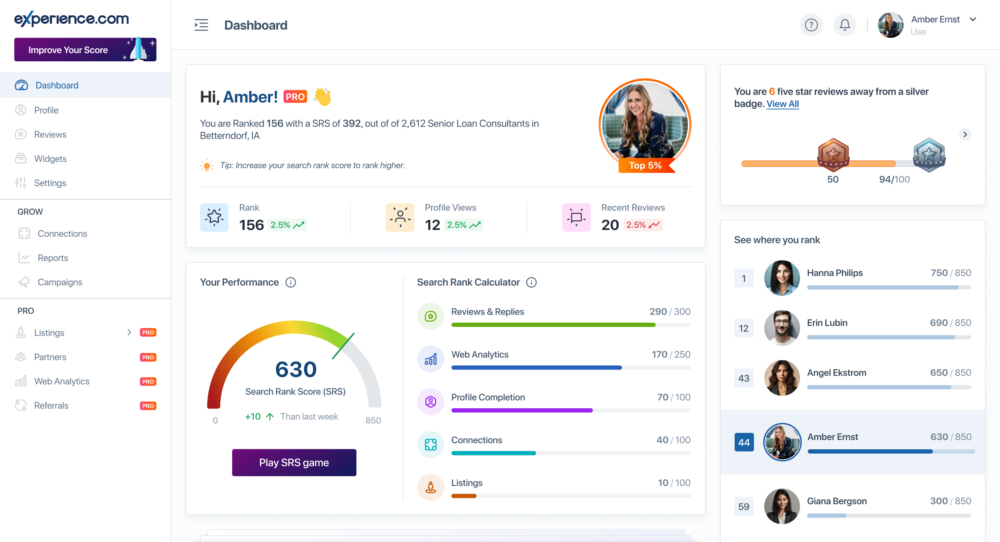

Scaling a Design Organization
Experience.com, Online Reputation Management SaaS

The Challenge
When I joined as the sole designer, the company was preparing to rebuild its entire platform from scratch. The existing product had grown unwieldy. The codebase was difficult to maintain, the UI was inconsistent, and the team struggled to ship quickly. Leadership made a bold decision: start fresh with a modern tech stack.
Outcomes
- Scaled team from 1 to 8 designers while progressing from IC to VP
- Built design system from zero during ground-up platform rebuild
- Increased shipping velocity 2-3× through design operations
- Launched freemium tier that grew user base by nearly 50,000